Summary
Cleo is an AI financial assistant app that offers insights on spending, saving tips, budgeting, and credit score building through chat. Previously using intent classification and pre-written responses, Cleo now leverages AI-generated chat for more engaging and dynamic conversations. I’ve been working on a set of internal tools to facilitate the Content Designers' job in the creation of those chats.
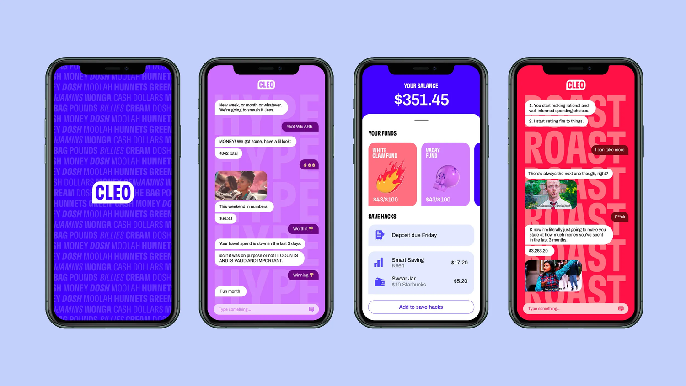
Introduction
Cleo is an AI financial assistant app designed to help people manage their finances.
Through chat, users engage with Cleo on a range of topics including insights on their spending, saving tips, budgeting advice, and credit score building.
Even before the widespread adoption of sophisticated language models like ChatGPT, Cleo was already harnessing the power of AI for over six years to facilitate these conversations.
In the earlier system, we classified what users were asking (known as intent) and then provided pre-written responses. However, these often fell short of natural conversations, sometimes resembling search results.
Now, with AI-generated chat becoming more popular, people expect our conversations to be not just proficient, but also engaging and dynamic. To tackle that challenge, internal tools are essential for the job.
The importance of internal tools
Internal tools are the foundation of our mission to create exceptional AI-generated chat interactions. They provide the essential space for our prompt engineers to craft prompts that effectively guide AI responses.
As our ambitions grew, it became evident that a single tool was insufficient. The complexity of creating and managing diverse prompts, assessing response quality, and ensuring a seamless user experience called for a dedicated Product Designer on our team.
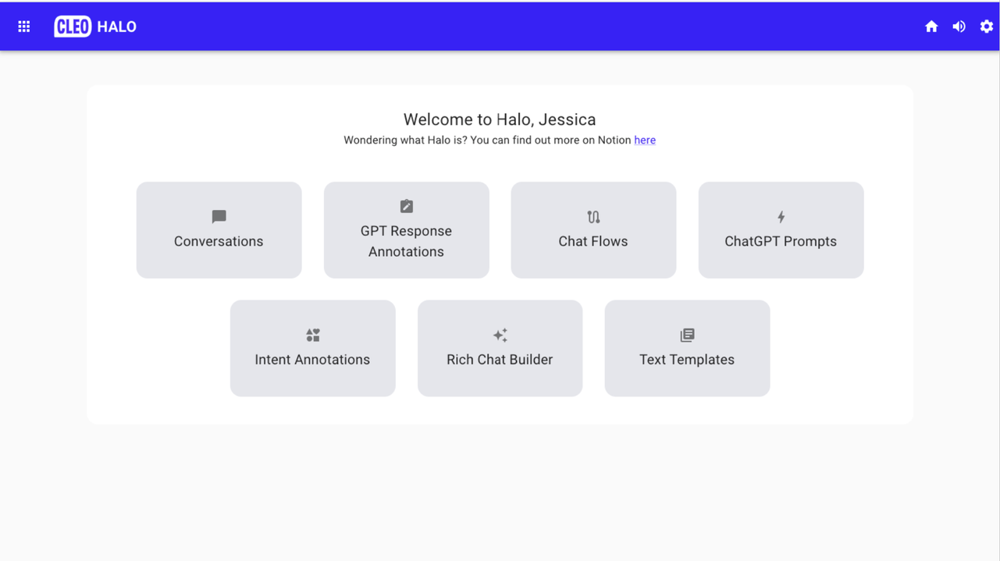
Designing a set of internal tools that empower the creation of AI-generated chats presents a multifaceted challenge.
These tools play a pivotal role in ensuring that AI, such as GPT-4, understands user intent and delivers responses that are not only accurate but also engaging and contextually relevant.
Here's why they matter:
Alignment with User Expectations: Users have higher expectations of AI-driven conversations today. They anticipate responses that are not just informative but also engaging, conversational, and tailored to their needs. Designing tools that aid in prompt creation allows us to align our AI interactions with these evolving expectations.
Precision in Communication: Crafting prompts that effectively convey user queries is essential. These tools help writers fine-tune prompts to ensure that the AI comprehends the nuances of user questions, leading to more accurate responses.
Optimising AI Output: AI models like GPT-4 are powerful, but they require clear instructions to provide the desired output. Tools for prompt creation enable us to give precise guidance to the AI, resulting in responses that are on-point and user-centric.
Maintaining Brand Voice: For brands like Cleo, maintaining a consistent brand voice is crucial. Internal tools help writers infuse the right tone and personality into prompts, ensuring that AI-generated responses reflect the brand's identity.
Efficiency and Scalability: As user interactions grow, internal tools become indispensable for efficiency and scalability. They enable prompt engineering at scale, meeting the demands of a growing user base without compromising quality.
The Challenge of Maintaining Quality
AI-generated responses can impress with their precision and even inject a touch of humour when done right, all while remaining contextual to the conversation.
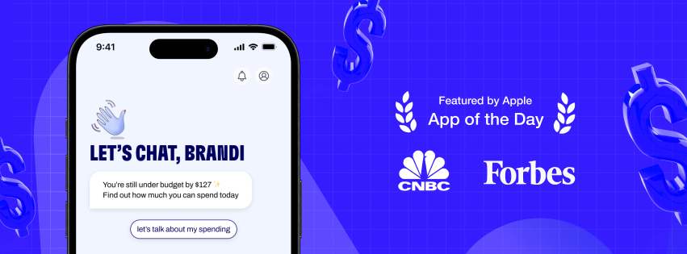
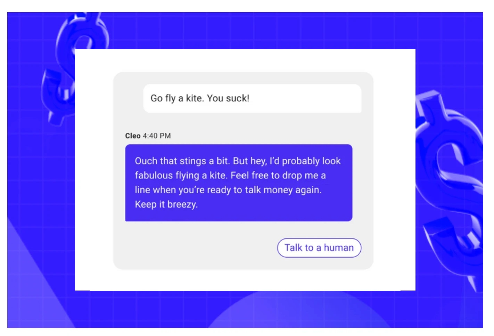
However, there are times when they produce unintended or unhelpful outputs, as shown in this example below:
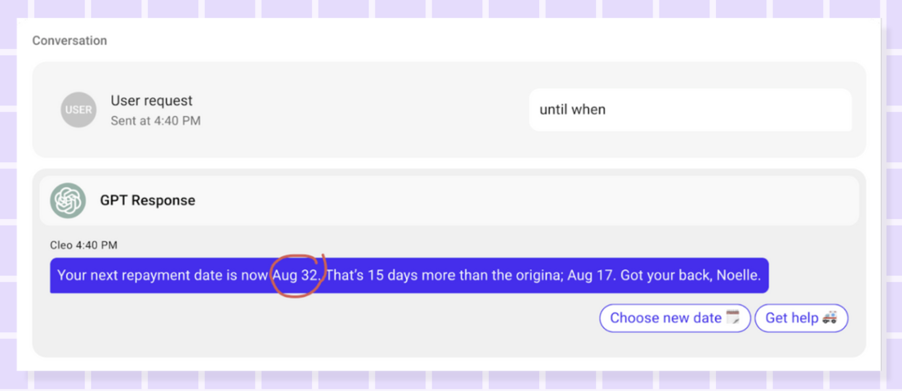
This highlights a critical issue: how do we ensure the quality of responses generated by AI, especially when the stakes are high, such as in customer support or informative interactions?
The answer lies in harnessing human expertise to evaluate and improve these responses. To address this challenge, we have created a tool that allows human evaluators to rate the quality of each AI-generated response. This human oversight is pivotal in maintaining the high standards of our chat interactions.
From Spreadsheet to Streamlined Interface
We started with a rudimentary system, depicted here as a simple spreadsheet:
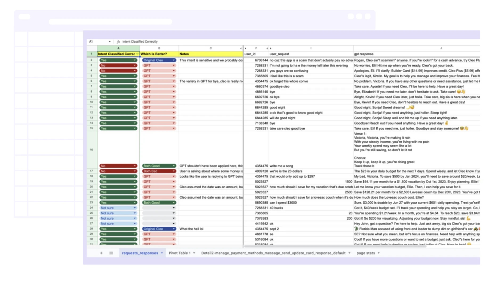
While it served its purpose, we recognized the need for a more sophisticated and user-friendly interface. The journey from the spreadsheet to our new tool marks a significant step forward in assessing response quality:
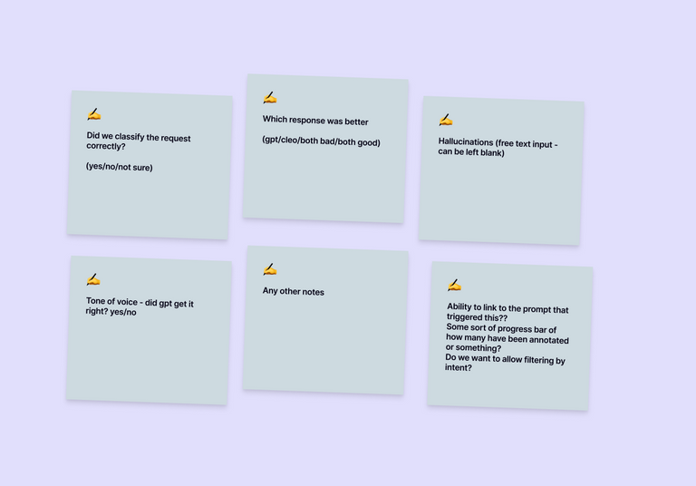
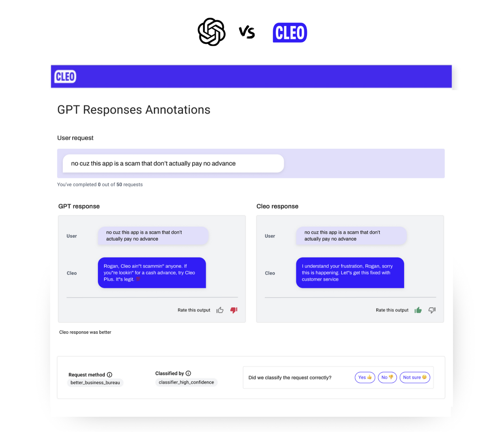
At the top, annotators can see the user request, followed by a two-column comparison: GPT response versus Cleo response.
This side-by-side comparison allows evaluators to make a direct assessment of which response serves the user better.
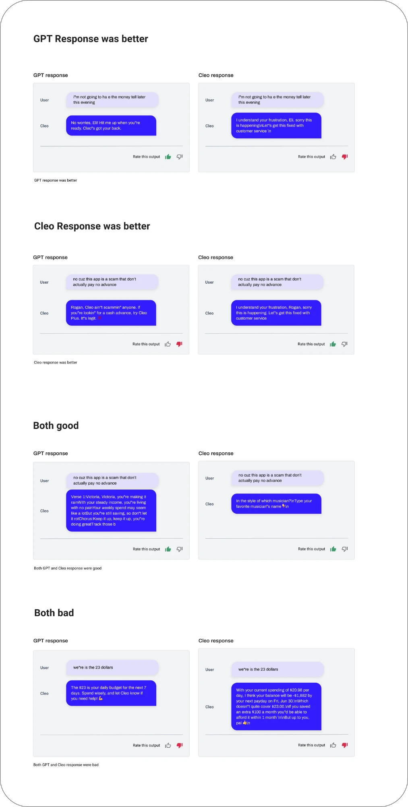
In its initial iteration, we relied on a simplistic "thumbs up" and "thumbs down" rating system, which boiled down to a binary "good response" or "bad response" assessment.
However, we quickly realized the need for a more nuanced approach.
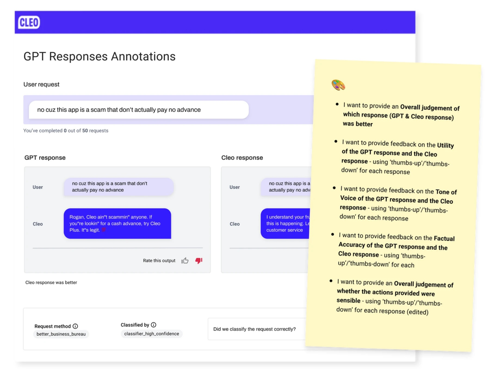
How are we doing it now?
To enhance the evaluation process, we introduced additional criteria for rating responses. Evaluators now consider factors like:
- utility
- tone of voice
- factual accuracy
- the provision of sensible actions
We even included a final question: "Which one is the better response?"
Also, to avoid biases, we anonymised the GPT responses vs. the Cleo one.
This revamped interface empowers our human evaluators to efficiently review AI-generated responses, providing ratings and feedback that play a pivotal role in refining and optimizing our chat interactions. The result is a system that not only streamlines evaluation but also significantly elevates the overall quality of our responses.
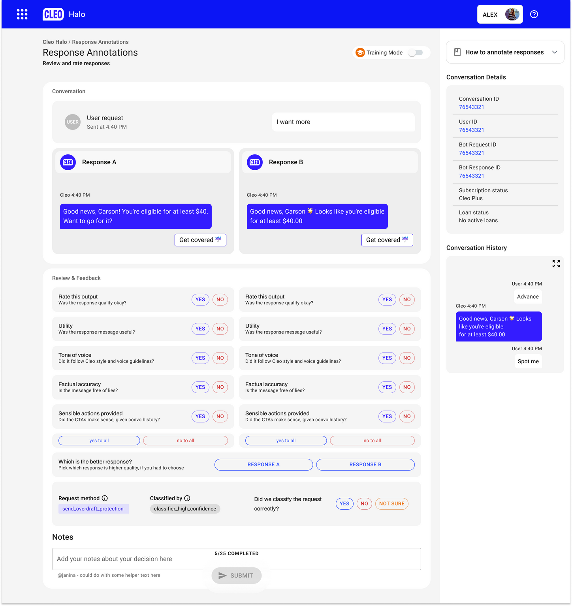
Room for Continuous Improvement
As we continue to refine our tools and processes, we acknowledge that there is always room for improvement. The journey toward perfecting AI-generated chat responses is ongoing, and we remain committed to staying at the forefront of AI technology.
Our goal is to ensure that every interaction with Cleo leaves users not only impressed with the intelligence of our chat but also satisfied with the quality of the conversation.
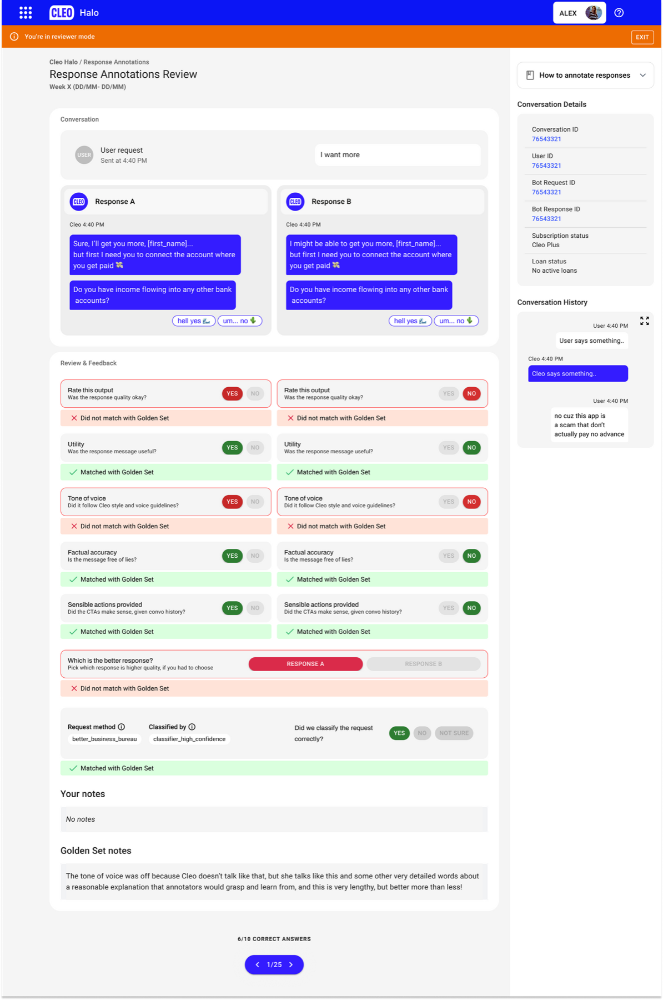
Conclusion
Designing tools for AI-generated chats is like embarking on an exciting adventure into uncharted territory. There are very few tools out there that have been carefully designed for this purpose. It's a journey that keeps evolving, and we’re constantly refining and adapting our tools to make them better.
As we continue on this exciting path, our enthusiasm is matched by our determination to lead in AI-driven conversations. We place a strong emphasis on design, constantly pushing the boundaries of technology. Our commitment is to craft chat experiences that are not just intelligent but also beautifully designed for our users.
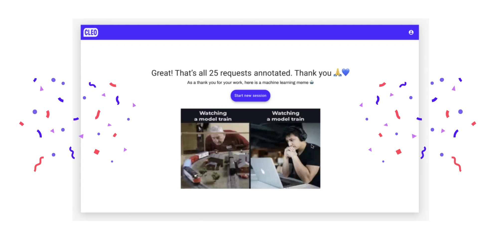